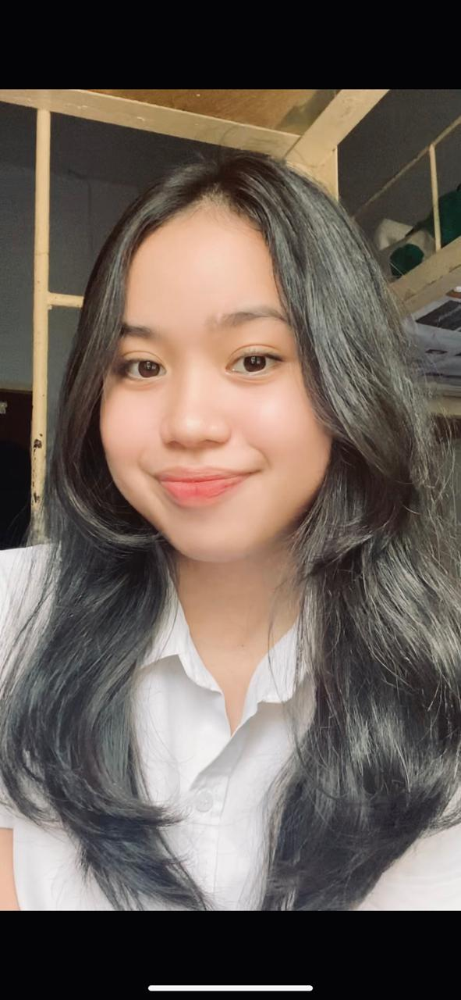

About Me
Halo! Saya Lovely, seorang mahasiswa Ilmu Komputer jurusan Sistem Informasi dengan semangat tinggi dalam memahami dan mengembangkan sistem yang dapat mempermudah kehidupan sehari-hari.
Saat ini, saya tengah mendalami berbagai aspek dari Sistem Informasi, mulai dari analisis kebutuhan hingga implementasi teknologi terkini. Saya senang menggali pengetahuan baru dan selalu berusaha untuk terus mengembangkan keterampilan saya di bidang ini.
Di luar perkuliahan, saya memiliki ketertarikan besar pada dunia K-pop, terutama NCT 127. Musik dan budaya K-pop memberikan saya inspirasi dan semangat dalam menjalani aktivitas sehari-hari. Selain itu, saya juga gemar membaca novel, yang membantu saya memperluas imajinasi dan kreativitas.
Saya percaya bahwa teknologi memiliki kekuatan untuk mengubah dunia menjadi tempat yang lebih baik, dan saya bertekad untuk menjadi bagian dari perubahan tersebut. Mari terhubung dan berbagi ide untuk menciptakan solusi inovatif bersama!